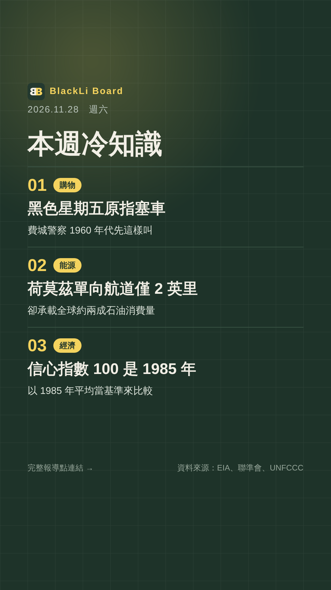

一張圖看懂這週

1. 「黑色星期五」一開始是在抱怨塞車？
這週美股在黑色星期五半天交易收高。很多人以為「黑色」是指商家終於「轉虧為盈、帳面變黑字」，但這個說法最早只能追到 1981 年。更早的用法來自 1950、60 年代的美國費城：感恩節隔天市中心擠滿購物人潮和車潮，警察得全員加班，於是把這天叫「黑色星期五」。百貨業者還曾想改成「Big Friday」，結果沒人理。
2. 荷莫茲海峽到底有多窄？
伊朗這週開條件才肯重開荷莫茲海峽。這條海峽最窄處約 21 英里（約 33 公里），但真正讓油輪走的航道，進出各只有 2 英里寬，中間再隔 2 英里緩衝區。美國能源資訊署（EIA）統計，2024 年每天約有 2,000 萬桶石油經過這裡，大約是全球石油消費量的兩成，所以它一有狀況，油價就跟著緊張。
3. 消費者信心指數「103.3」是跟誰比？
美國消費者信心這週跳升到 103.3。這個由美國經濟研究機構「世界大型企業聯合會」（The Conference Board）從 1967 年開始做的調查，是把 1985 年的平均值訂成 100 當基準。選 1985 年，是因為那年景氣既不是高峰也不是谷底。所以 103.3 的意思是：現在的民眾比 1985 年平均稍微樂觀一點。
4. COP31 的「COP」是什麼縮寫？
這週 COP31 氣候大會沒有談出協議。COP 是「Conference of the Parties」，中文叫「締約方大會」，指《聯合國氣候變化綱要公約》所有締約方開的年度會議，也是這個公約的最高決策機構。第一屆 COP1 在 1995 年於德國柏林舉行，當時的大會主席是時任德國環境部長梅克爾，後來她當了 16 年的德國總理。
5. 聯準會為什麼比較愛看 PCE，不看 CPI？
美國 10 月核心 PCE 這週升到 3.3%。PCE（個人消費支出物價指數）和 CPI 都在量物價，但 CPI 用固定的一籃子商品，PCE 會跟著大家實際的消費習慣調整權重，例如牛肉變貴、大家改買雞肉，PCE 會反映這種「換著買」。聯準會從 2000 年 2 月起改用 PCE 描述通膨展望，2012 年正式把 2% 的通膨目標訂在 PCE 上。
如果要你替自己的生活訂一個「100 分的基準年」，你會選哪一年？現在的你，大概是幾分？
資料來源：History.com：Black Friday 的由來、美國能源資訊署（EIA）：荷莫茲海峽、The Conference Board：消費者信心調查技術說明、UNFCCC：COP1 會議報告、聯準會：2000 年 2 月貨幣政策報告、亞特蘭大聯準銀行：什麼是 PCE